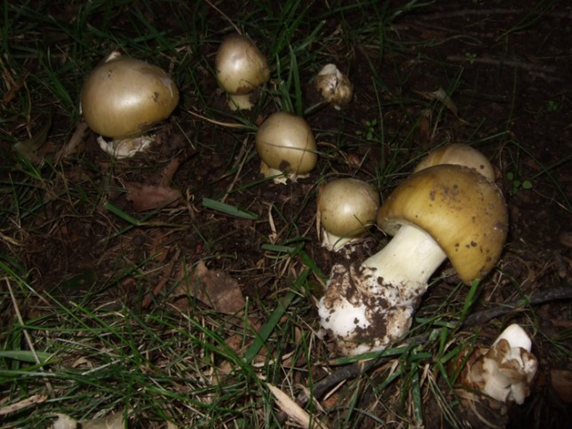
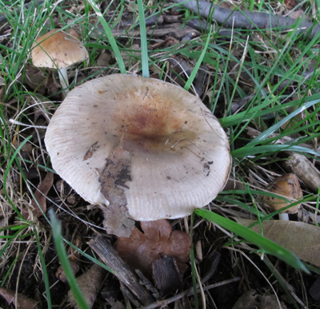

By Sapphire McMullan-Fisher, ALA Fungimap Project Manager
The recent wet summer in Canberra led to tragic consequences when a meal mistakenly containing Deathcap mushrooms was eaten:

Deathcap mushrooms (Amanita phalloides) found under Pin Oaks (Quercus palustris).
Photo courtesy: Robyn Lawrence
More information about Deathcap mushrooms can be found at the Australian National Botanic Gardens Deathcap page and the Atlas’ species information page »
Eating any mushrooms found in the wild is not recommended unless you are highly knowledgeable about local poisonous and edible mushrooms.
Some Australian mushrooms and other fungi look similar to edible species from overseas but may be highly poisonous.

Agaricus sp. found in local Canberra parkland.
Edibility unknown.
Photo courtesy: Sapphire McMullan-Fisher.
The button and field mushrooms we buy from shops and markets belong to a genus called Agaricus. There are many species of Agaricus, some may be edible and others are not. Whether edible or not, these mushrooms can appear in our local gardens, parklands and bush areas, and do part of the important job of decomposing in our local areas.
Many fungi have the job of decomposing things which die. Think of the leaves and twigs that fall from trees, and lie around before eventually disappearing. What happens is that they are decomposed by the action of fungi and microorganisms.
Gardeners will know how useful this decomposition process is in adding nutrients to the soil - many accelerate this breaking-down process by making compost and applying it to the roots of their plants which can then take advantage of the extra food.

Inocybe (left) and Russula (right). These two mushrooms although very close two each other are from different fungal genera. Neither of these fungi are likely to be edible but were found in the same area as Agaricus sp. and Deathcap (Amanita phalloides).
Photo courtesy: Sapphire McMullan-Fisher.
The dangers of picking mushrooms are increased as many people don’t realise that two mushrooms can grow close together but may be two different species of fungi altogether, and one or both may be poisonous.
Why are they here?
Deathcap mushrooms have been popping up more this year because the wet conditions favour their fruiting. Typically, they are more often seen with the early Autumn rains. These mushrooms are not turning up with any malicious intent, it’s just that the weather conditions are suitable.
Most fungi go unseen most of the time because they live within soil, wood or other substrates. We tend to notice them when they produce fruiting bodies. Like the fruit of plants that spread the seeds; mushrooms and their fruiting bodies spread the spores of the fungus. Although we don’t see most fungi most of the time, they perform important roles in our environment.
The Deathcap mushrooms are part of an important group of fungi in our ecosystems called mycorrhiza. Without mycorrhiza, most land-based plants would grow poorly or not at all in some cases. Deathcap mushrooms are often found under exotic trees like oaks, common in Canberra’s Parks and Gardens. The Deathcap is a mycorrhizal partner with these trees. This mushroom is a hitchhiker that came across with these imported plants.
What are they doing?
As a mycorrhizal fungus, the mushroom is carrying out an important job of getting micronutrients and water to its plant partner. Plants that have good mycrorrhizal partners have better nutrition, access to water and do better during drought. These mycorrhizal fungi live on the roots of their plants, and so often protect them from soil pathogens.
So the next time you see mushrooms and other fungi, you might stop to appreciate that they are working to help keep your local ecosystem healthy.
Get involved with Fungi
Are you passionate about Fungi and and want to learn more? Consider attending the three day Tasmanian Fungi Festival in Hobart, 26-29 April 2012, presented by Fungimap and NRM South.
Tasmanian Fungi Festival details:
- Festival Flyer (PDF 614KB)
- Website: http://www.rbg.vic.gov.au/fungimap/tasmanian-fungi-festival-2012/
Or why not join your local Fungi study group affiliated with Fungimap »
The Atlas of Living Australia is in partnership with Fungimap to develop a new FieldData tool for capturing details of Fungi found in the field and working on improving the information gathered about Fungimap’s target species. More on this later …

{kind=link}
{kind=link}